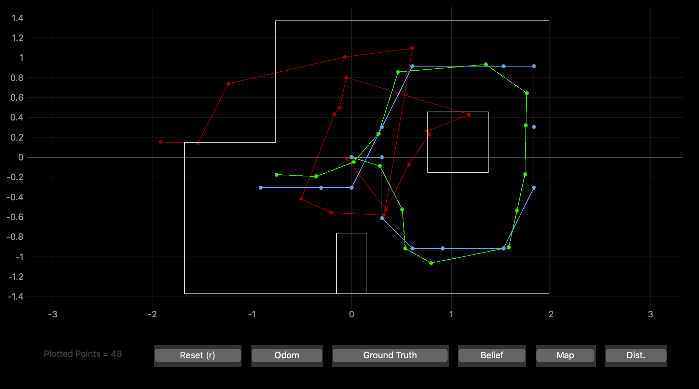
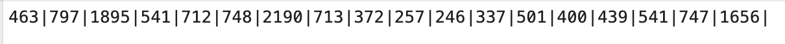
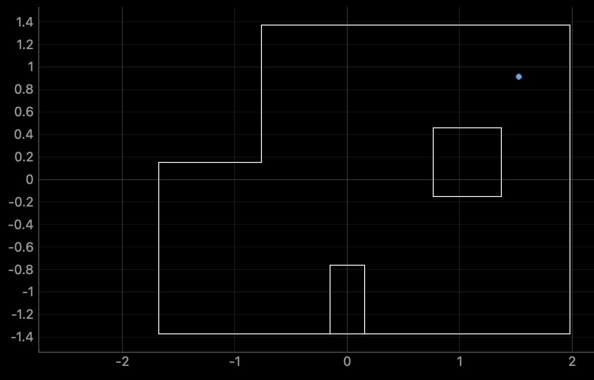
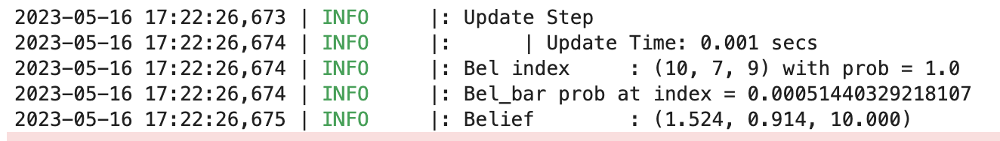
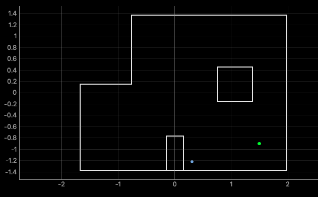
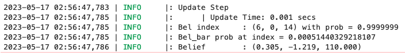
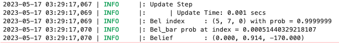
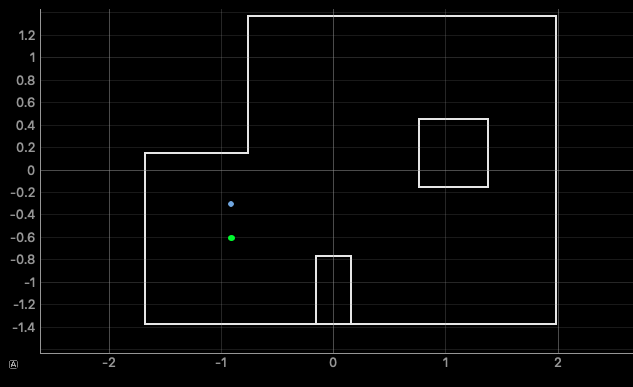
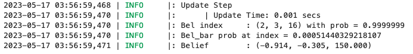

Lab 11
Objective:
In this lab, I merge mapping in the physical world with localization in the simulator. By doing so, I create a direct pipeline for the robot to determine its position in the arena over bluetooth, and to visualize it in the simulator, rapidly.
Prelab
For the prelab, I integrated provided files for the simulator to run with the guarantee of correctness. Among these files were a localization module for the virtual robot. The open-ended part of the localization side of this lab was the input method for the sensor readings and bearings. For this, the new files included skeleton code to be completed for the simulation to be functional. To verify the simulator had all its modules in place, I ran the provided simulator notebook, and recovered the following reasonable simulation run. As previously, green dots are ground truth, blue dots are belief, and red dots are odometry readouts.

Observation Loop
For this lab, we needed 18 points of data from each location to align with the existing simulator setup. As the simulator assumes spinning counterclockwise from a known 0 degree heading, and measuring forward-facing distance at each 20 degree increment, a control loop to collect accurate data was required. I opted to adapt the angular speed proportional control code from my mapping lab 9. It was adapted to maintain a spin of 20 degrees per second, with a default spin PWM of 100, and take a reading every second for 18 seconds to produce 18 data points uniformly across 360 degrees. The code is otherwise functionally identical to lab 9.
Observation to Simulation Data Handoff
I chose to have a new blueooth command for the observation loop described above, and have the collected data be ported into a text file. This text file, containing 18 distances in mm, all approximately 20 degrees apart, has vertical bar separators. As this is stored in the base directory with the simulator notebook, it is accessed directly by the 'perform_observation_loop()' function in the simulator. Here, the distances are retrieved and converted to metres and, although the bearings aren't used in this lab, are also returned in degrees.

Localizations
Placing the robot in each of the four marked spots in the arena twice, (5,3), (5, -3), (0,3), (-3,-2), the following were my best localizations for each.
(5,3)


The ground truth pose is (1.524, 0.914, 0.000)
The computed belief pose is (1.524, 0.914, 10.000)
The resultant error is (0.000, 0.000. -10.000)
This result is interesting for multiple reasons. While the position is perfect, the orientation is off by ten degrees. This could be indicative of an offset introduced by the imprecision of the robot observation control loop method, or its true initial orientation. The belief confidence in this position is also 1.0, indicating absolute certainty in this returned belief. I did not expect this degree of certainty, as any sensor reading deviating even slightly from the arena model should introduce some alternative possibilities for grid location. I believe this indicates the flukish nature of the better of my two localizations from this position, as the other also localized position correctly, but with a lower degree of certainty.
(5,-3)


The ground truth pose is (1.524, -0.914, 0.000)
The computed belief pose is (0.305, -1.219, 110.000)
The resultant error is (1.219, 0.305. -110.000)
This result is less promising that the first. Both localizations at this position resulted in the same estimated position, 4 feet in the x direction, and 1 foot in the y direction, offset. It is also well over a right turn off on orientation. I expect this is due to the nature of that corner of the arena to look very similar to a rotating low-resolution TOF sensor from a number of positons. This is as both unobstructed views along the sides of box 1 are longer than the range for which the TOF returns true values. Thus, for a number of positions, the sensor can return arbitrary values, confusing for localization. However, once again, the confidence in the position is unreasonably high, which indicates perhaps there was a systematic offset in the readings of the TOF that suggest the position believed is highly likely.
(0,3)


The ground truth pose is (0.000, 0.914, 0.000)
The computed belief pose is (0.000, 0.914, -170.000)
The resultant error is (0.000, 0.000, 170.000)
A similarly successful outcome as (5,3), we again see near certainty in the correct position, but the incorrect orientation. As this orientation offset is far more significantly offset, it is possible I oriented the robot opposite (180.000 ground truth) in reality for this best run, but unfortunately did not capture a picture of it. Regardless, the analysis of this localization is identical to that for (5,3).
(-3,-2)


The ground truth pose is (-0.914, -0.914, 0.000)
The computed belief pose is (-0.914, -0.305, 150.000)
The resultant error is (0.000, -0.609, -150.000)
A similarly successful outcome as (5,-3), we again see an offset in position for the better run, and an incorrect orientation. As this orientation offset is again near 180 degrees, it is possible I oriented the robot opposite (180.000 ground truth) in reality for this best run, but unfortunately did not capture a picture of it. The nature of the position offset to be solely in the y axis suggests that possibly box 2 was translated slightly upwards in the real world, as compared to the arena model. An alternative explanation is that the 2/3 data points that constitute the relative position of that box were off by about half a foot, and thus cause the box to appear further than it really is.
Overall
I don't believe these localization results necessarily demonstrate that some poses localize better than others. Each location had differences in pose across runs (even if only orientation), and I believe a large degree of the uncertainty is due to the low-resolution of the observations. Taking a single, potentially noisy, datapoint from which the extrapolate the distance to the nearest obstacle across a whole 20 degree range is less than the robot is capable of. Also, given the jerky nature of the robot rotating in place, I am not confident the readings were as precisely separated as the localization assumes. If I were to do this experiment again, in order to have better results across all positions, I would take more than 18 readings, and change the localization code to take the true reading bearings into consideration.